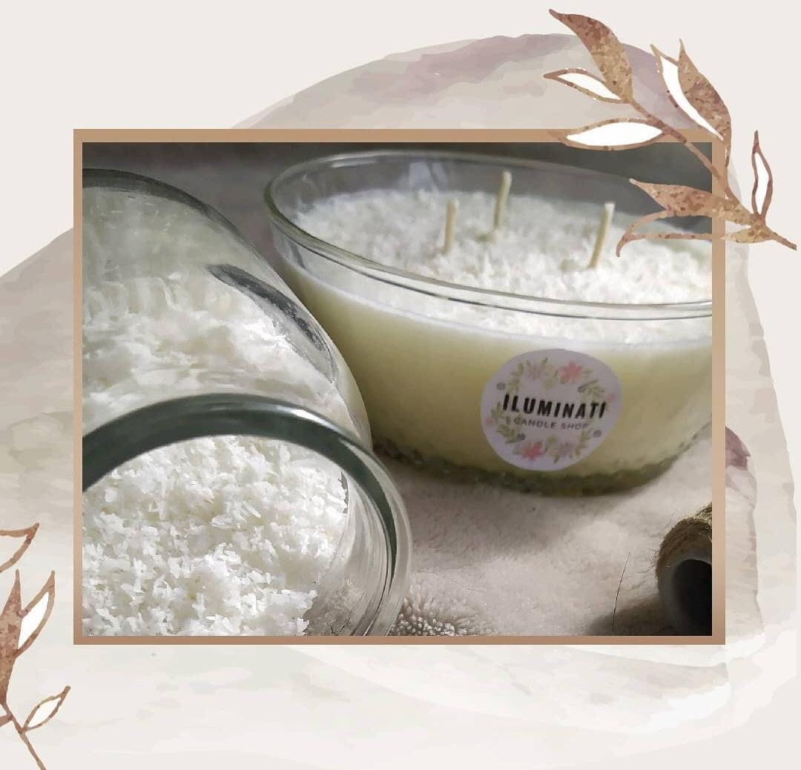

.png)
Acerca de nosotros:
Este emprendimiento inició como un cable a tierra, una forma de canalizar el encierro que nos sorprendio en el 2020, transformando el paso de los días en algo positivo. Y como todo lo que se hace con el corazón, empezó a crecer, a reinventarse cada día un poco más.
Hoy les presentamos con mucho orgullo nuestra pagina web, que una vez más, surge del amor por crear, crecer e innovar... Pero no llega solo, viene cargado de nuevos proyectos y fragancias para que cada día disfruten más encender nuestras velas.
Nuestras bases para soñar este emprendimiento fueron:
Tomar conciencia de la importancia del cuidado del medio ambiente, este representa a todas aquellas conductas que los seres vivos deben tomar en pro a la salud de la naturaleza. La finalidad es hacerlo un medio con más oportunidades y más provechos que satisfacen la vida de todas las generaciones

¿Porqué hacer velas de soja artesanales?
Te compartimos 5 tips:
- Son de origen vegetal
- Al quemar no emite tóxicos
- Las velas de soja duran mucho más que las de parafina
- Son más sostenibles, sus envases son reutilizables
- Perfumamos tu hogar y cuidamos el medio ambiente